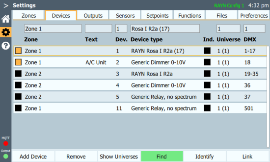

Settings > Devices
RAYN Syrcadia is an advanced real-time controller software for multi-waveband lighting fixtures in addition to other devices such as dimmers and relays. It requires a connection to devices it is meant to control. This connection is made either via Ethernet-based protocols (sACN and Art-Net) to lighting fixtures or converters or by direct use of DMX512A signal. When using multi-waveband lighting fixtures, RAYN Syrcadia needs to know of and understand the wavebands available in those fixtures. RAYN Syrcadia offers a library of fixtures to choose from, or new fixtures can be requested by contacting your RAYN Growing Systems provider.
Devices controlled by RAYN Syrcadia require unique starting addresses. These may be set on the devices themselves, on an intermediate converter device (such as a DMX to 0‑10 V converter) or may be assigned using RAYN Syrcadia through a protocol called Remote Device Management (RDM). Each device type may occupy a differing number of DMX control channels, depending on its wavebands and other parameters.
RAYN Syrcadia on RAYN Touch hardware has a capacity of 80 individually controllable devices and 5 universes of DMX512A with 512 addresses each per controller (one universe is supplied by a direct DMX connection to the controller, and/or all five may be distributed via Ethernet protocols). All the devices connected to RAYN Touch must fit within this space.
RAYN Syrcadia on PC Base or Unlocked supports up to 2 or 12 universes of DMX respectively.
Note: If multiple devices of the same type share the same starting address, they may all be controlled as one device. If multiple devices of different types share the same starting address or if devices overlap addresses, it may appear that some devices are misbehaving, due to the mismatch in configurations of the devices.
Devices are numbered in the control system and on the topographical display for selection during programming. Numbering is established by RAYN Syrcadia in the order in which devices are patched to the system. When connecting devices it is possible to alter the default numbers to create a more organized system. Device numbers must be unique across all zones on a controller.
RAYN Touch running RAYN Syrcadia software supports up to 80 individual patched device numbers. RAYN Syrcadia on PC supports up to 320.
Device Tab

Device connections can be edited directly within this tab. Select one or more devices to select them. Use the cells along the top of the tab to assign the device to a zone or to adjust the device number, DMX universe, and DMX address. The device type can only be changed by using Remove to delete the device from the list, then selecting Add Device to add the correct type.
The Text column allows you to add labels or notes for each device. Devices may be marked independent by selecting the Ind. field, with gold indicating independent has been assigned. Independent devices are not recorded into spectra or overrides and will not be affected the All On or All Off overrides. Independent devices may be triggered by day plan commands.
When Device detection (RDM) is enabled Settings > Preferences > Basic, the Find and Identify buttons allow you to add and locate devices via RDM. When disabled, Find and Identify do not appear.
The Link button can be used to link a device discovered using RDM to a device that already exists within the configuration; for example, if the configuration was prepared offline, or a fixture head has been replaced with a new unit.
Note: Devices require a certain number of DMX addresses to operate. When changing type, it is possible that the number of required addresses will change. If the new type requires more addresses than the older type, address conflicts may occur. These conflicts will be indicated in the list in red. Resolving these conflicts will require some devices to change their starting addresses until all devices have unique, non-overlapping addresses within a single universe. Refer to the device's documentation to determine how to change its starting address.
- Devices > Add Device - patches lights or relays to the controller.
- Devices > Remove - removes lights or relays and all of their programming from the controller.
- Devices > Show Universes - a display of the DMX output data channels for each DMX universe.
- Devices > RDM - toggles RDM communication, identification, and linking.